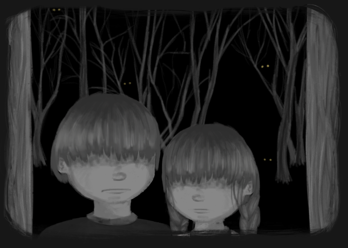

“Be quiet, Gretel,” said Hansel, “and don’t worry. I know what to do.”
And as soon as the adults had fallen asleep, he got up, pulled on his jacket, opened the lower door, and crept
outside.
The moon was shining brightly, and the white pebbles in front of the house were glistening like silver
coins.
Gretel ran to wake her brother, she cried bitter tears and said to Hansel, “It is over with us!”


Hansel bent over and filled his jacket pockets with them, as many as would fit.

Then he went back into the house and said, “Don’t worry, Gretel. Sleep well. God will not forsake us.” Then he went back to bed.

At daybreak, even before sunrise, the woman came and woke the two children. “Get up, you lazybones. We are going into the woods to fetch wood.” Then she gave each one a little piece of bread, saying, “Here is something for midday. Don’t eat it any sooner, for you’ll not get any more.”

Gretel put the bread under her apron, because Hansel’s pockets were full of stones. Then all together they set forth into the woods. After they had walked a little way, Hansel began stopping again and again and looking back toward the house.

The father said, “Hansel, why are you stopping and looking back? Pay attention now, and don’t forget your
legs.”
“Oh, father, i” said Hansel, “I am looking at my white cat that is sitting on the roof and wants to say good-bye
to me.”
The woman said, “You fool, that isn’t your cat. That’s the morning sun shining on the chimney.”
However, Hansel had not been looking at his cat but instead had been dropping the shiny pebbles from his
pocket onto the path.

When they arrived in the middle of the woods, the father said, “You children gather some wood, and I will make a fire so you won’t freeze.”

Hansel and Gretel gathered together some twigs, a pile as high as a small mountain

The twigs were set afire, and when the flames were burning well, the woman said, “Lie down by the fire and rest.
We will go into the woods to cut wood. When we are finished, we will come back and get you.”

Hansel and Gretel sat by the fire. When midday came each one ate his little piece of bread. Because they could hear the blows of an ax, they thought that the father was nearby. However, it was not an ax. It was a branch that he had tied to a dead tree and that the wind was beating back and forth. After they had sat there a long time, their eyes grew weary and closed, and they fell sound sleep. When they finally awoke, it was dark at night. Gretel began to cry and said, “How will we get out of woods?” Hansel comforted her, “Wait a little until the moon comes up, and then we’ll find the way.” After the full moon had come up, Hansel took his little sister by the hand. They followed the pebbles that glistened there like newly minted coins, showing them the way. They walked throughout the entire night, and as morning was breaking, they arrived at the father’s house.


They knocked on the door, and when the woman opened it and saw that it was Hansel and Gretel, she said, “You wicked children, why did you sleep so long in the woods? We thought that you did not want to come back.” But the father was overjoyed when he saw his children once more, for he had not wanted to leave them alone.

Not long afterward there was once again great need everywhere, and one evening the children heard the mother say to the father, “We have again eaten up everything. We have only a half loaf of bread, and then the song will be over. We must get rid of the children. We will take them deeper into the woods, so they will not find their way out. Otherwise there will be no help for us.”
The man was very disheartened, and he thought, “It would be better to share the last bit with the children.” But the woman would not listen to him, scolded him, and criticized him. He who says A must also say B, and because he had given in the first time, he had to do so the second time as well.

The children were still awake and had overheard the conversation. When the adults were asleep, Hansel got up again and wanted to gather pebbles as he had done before, but the woman had locked the door, and Han- sel could not get out. But he comforted his little sister and said, “Don’t cry, Gretel. Sleep well. God will help us.”
Early the next morning the woman came and got the children from their beds. They received their little piec- es of bread, even less than the last time. On the way to the woods, Hansel crumbled his piece in his pocket, then often stood still, and threw crumbs onto the ground.

Little by little Hansel dropped all the crumbs onto the path. The woman took them deeper into the woods than they had ever been in their whole lifetime. Once again a large fire was made, and the mother said, “Sit here, children. If you get tired you can sleep a little. We are going into the woods to cut wood. We will come and get you in the evening when we are finished.”
When it was midday Gretel shared her bread with Hansel, who had scattered his piece along the path. Then they fell asleep, and evening passed, but no one came to get the poor children. It was dark at night when they awoke, and Hansel comforted Gretel and said, “Wait, when the moon comes up I will be able to see the crumbs of bread that I scattered, and they will show us the way back home.”

When the moon appeared they got up, but they could not find any crumbs, for the many thousands of birds that fly about in the woods and in the fields had pecked them up. Hansel said to Gretel, “We will find our way,” but they did not find it.

They walked through the entire night and the next day from morning until evening, but they did not find their way out of the woods. They were terribly hungry, for they had eaten only a few small berries that were growing on the ground.

And because they were so tired that their legs would no longer carry them, they lay down under a tree and fell asleep. It was already the third morning since they had left the father’s house. They started walking again, but managed only to go deeper and deeper into the woods. If help did not come soon, they would perish. At midday they saw a little snow-white bird sitting on a branch. It sang so beautifully that they stopped to listen. When it was finished it stretched its wings and flew in front of them.
They followed it until they came to a lit- tle house. The bird sat on the roof, and when they came closer, they saw that the little house was built entirely from bread with a roof made of cake, and the windows were made of clear sugar. “Let’s help ourselves to a good meal,” said Hansel. “I’ll eat a piece of the roof, and Gretel, you eat from the window. That will be sweet.” Hansel reached up and broke off a little of the roof to see how it tasted, while Gretel stood next to the win- dowpanes and was nibbling at them.
Then a gentle voice called out from inside:
Nibble, nibble, little mouse, Who is nibbling at my house? The children answered:
The wind, the wind,
The heavenly child.
Suddenly the door opened, and a woman, as old as the hills and leaning on a crutch, came creeping out. Hansel and Gretel were so frightened that they dropped what they were holding in their hands.
But the old woman shook her head and said, “Oh, you dear children, who brought you here? Just come in and stay with me. No harm will come to you.”

She took them by the hand and led them into her house. Then she served them a good meal: milk and pan- cakes with sugar, apples, and nuts.

Afterward she made two nice beds for them, decked in white. Hansel and Gretel went to bed, thinking they were in heaven. But the old woman had only pretended to be friendly. She was a wicked witch who was lying in wait there for children. She had built her house of bread only in order to lure them to her, and if she captured one, she would kill him, cook him, and eat him; and for her that was a day to celebrate.
Witches have red eyes and cannot see very far, but they have a sense of smell like animals, and know when humans are approaching.
When Hansel and Gretel came near to her, she laughed wickedly and thought scornfully, “Now I have them. They will not get away from me again.”
Early the next morning she grabbed Hansel with her withered hand and carried him to a little stall, where she locked him be- hind a cage door. Cry as he might, there was no help for him. Then she shook Gretel and cried, “Get up, lazybones! Fetch water and cook something good for your brother. He is locked outside in the stall and is to be fattened up. When he is fat I am going to eat him.”

Every morning the old woman crept out to the stall and shouted, “Hansel, stick out your finger, so I can feel if you are fat yet.”
But Hansel stuck out a little bone, and the old woman, who had bad eyes and could not see the bone, thought it was Hansel’s finger, and she wondered why he didn’t get fat.
When four weeks had passed and Hansel was still thin, impatience overcame her, and she would wait no longer. “Hey, Gretel!” she shouted to the girl, “Hurry up and fetch some water. Whether Hansel is fat or thin, tomorrow I am going to slaughter him and boil him.”

“Climb in,” said the witch, “and see if it is hot enough to put the bread in yet.” And when Gretel was inside, she intended to close the oven, and bake her, and eat her as well.
But Gretel saw what she had in mind, so she said, “I don’t know how to do that. How can I get inside?” “Stupid goose,” said the old woman. The opening is big enough. See, I myself could get in.”
Then Gretel gave her a shove, causing her to fall in. The old woman began to howl frightfully. But Gretel ran away, and the godless witch burned up miserably.

How happy they were! They threw their arms around each other’s necks, jumped with joy, and kissed one another. Because they now had nothing to fear, they went into the witch’s house. In every corner were chests of pearls and precious stones.
“These are better than pebbles,” said Hansel, filling his pockets. Gretel said, “I will take some home with me as well,” and she filled her apron full.
“But now we must leave,” said Hansel, “and get out of these witch-woods.”

The woods grew more and more familiar to them, and finally they saw the father’s house in the dis- tance. They began to run, rushed inside, and threw their arms around the father’s neck. The man had not had even one happy hour since he had left the children in the woods. However, the woman had died. Gretel shook out her apron, scattering pearls and precious stones around the room, and Hansel added to them by throwing one handful after the other from his pockets. Now all their cares were at an end, and they lived happily together.